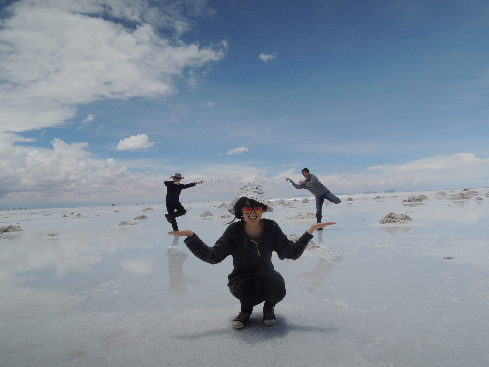
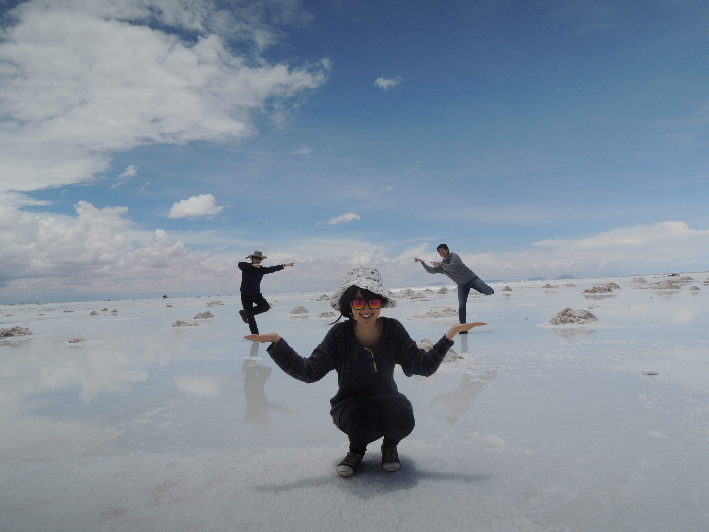

Heyrim Cho
Assistant Professor,
School of Mathematical and Statistical Sciences
Arizona State University
Research Interests
Mathematical and Computational Biology, Mathematical Oncology, Data-driven modeling
Stochastic modeling and Uncertainty Quantification
Computational methods for high-dimensional stochastic systems
Multi-scale modeling and simulations
Numerical PDE and High-performance computing
I was an assistant professor at University of California Riverside in the Department of Mathematics, affiliated with Interdisciplinary Center for Quantitative Modeling in Biology . I was a Brin postdoc fellow at University of Maryland, College Park, working with Dr. Doron Levy. I received my Ph.D. from the Division of Applied Math at Brown University, working with Dr. George Em Karniadakis. I received my B.S. in Applied mathematics and M.S.in Mathematics from KAIST (Korea Advanced Institute on Science and Technology), working with Dr. Chang-Ock Lee.
 
